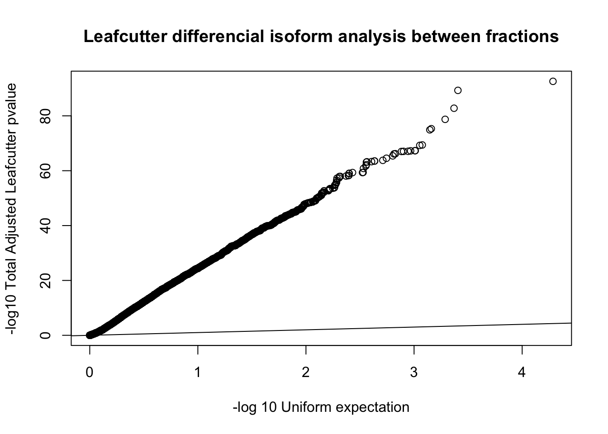
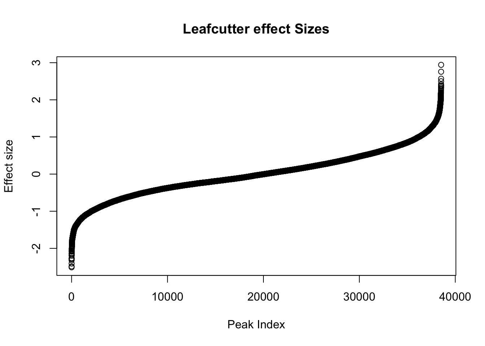
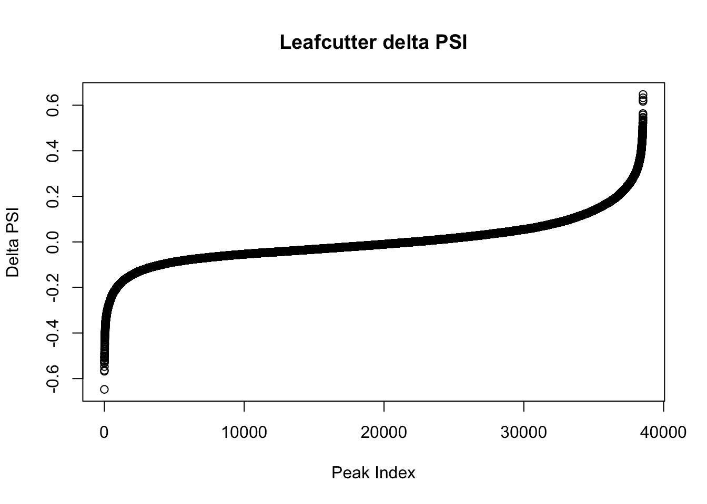

Last updated: 2019-01-24
workflowr checks: (Click a bullet for more information) ✔ R Markdown file: up-to-date
Great! Since the R Markdown file has been committed to the Git repository, you know the exact version of the code that produced these results.
✔ Environment: empty
Great job! The global environment was empty. Objects defined in the global environment can affect the analysis in your R Markdown file in unknown ways. For reproduciblity it’s best to always run the code in an empty environment.
✔ Seed:
set.seed(12345)
The command set.seed(12345) was run prior to running the code in the R Markdown file. Setting a seed ensures that any results that rely on randomness, e.g. subsampling or permutations, are reproducible.
✔ Session information: recorded
Great job! Recording the operating system, R version, and package versions is critical for reproducibility.
✔ Repository version: 19ec099
wflow_publish or wflow_git_commit). workflowr only checks the R Markdown file, but you know if there are other scripts or data files that it depends on. Below is the status of the Git repository when the results were generated:
Ignored files:
Ignored: .DS_Store
Ignored: .Rhistory
Ignored: .Rproj.user/
Ignored: data/.DS_Store
Ignored: output/.DS_Store
Untracked files:
Untracked: KalistoAbundance18486.txt
Untracked: analysis/DirectionapaQTL.Rmd
Untracked: analysis/EvaleQTLs.Rmd
Untracked: analysis/YL_QTL_test.Rmd
Untracked: analysis/ncbiRefSeq_sm.sort.mRNA.bed
Untracked: analysis/snake.config.notes.Rmd
Untracked: analysis/verifyBAM.Rmd
Untracked: code/PeaksToCoverPerReads.py
Untracked: code/strober_pc_pve_heatmap_func.R
Untracked: data/18486.genecov.txt
Untracked: data/APApeaksYL.total.inbrain.bed
Untracked: data/ChromHmmOverlap/
Untracked: data/GM12878.chromHMM.bed
Untracked: data/GM12878.chromHMM.txt
Untracked: data/LianoglouLCL/
Untracked: data/LocusZoom/
Untracked: data/NuclearApaQTLs.txt
Untracked: data/PeakCounts/
Untracked: data/PeakCounts_noMP_5perc/
Untracked: data/PeakUsage/
Untracked: data/PeakUsage_noMP/
Untracked: data/PeaksUsed/
Untracked: data/PeaksUsed_noMP_5percCov/
Untracked: data/RNAkalisto/
Untracked: data/TotalApaQTLs.txt
Untracked: data/Totalpeaks_filtered_clean.bed
Untracked: data/UnderstandPeaksQC/
Untracked: data/YL-SP-18486-T-combined-genecov.txt
Untracked: data/YL-SP-18486-T_S9_R1_001-genecov.txt
Untracked: data/YL_QTL_test/
Untracked: data/apaExamp/
Untracked: data/apaQTL_examp_noMP/
Untracked: data/bedgraph_peaks/
Untracked: data/bin200.5.T.nuccov.bed
Untracked: data/bin200.Anuccov.bed
Untracked: data/bin200.nuccov.bed
Untracked: data/clean_peaks/
Untracked: data/comb_map_stats.csv
Untracked: data/comb_map_stats.xlsx
Untracked: data/comb_map_stats_39ind.csv
Untracked: data/combined_reads_mapped_three_prime_seq.csv
Untracked: data/diff_iso_proc/
Untracked: data/diff_iso_trans/
Untracked: data/ensemble_to_genename.txt
Untracked: data/example_gene_peakQuant/
Untracked: data/explainProtVar/
Untracked: data/filtered_APApeaks_merged_allchrom_refseqTrans.closest2End.bed
Untracked: data/filtered_APApeaks_merged_allchrom_refseqTrans.closest2End.noties.bed
Untracked: data/first50lines_closest.txt
Untracked: data/gencov.test.csv
Untracked: data/gencov.test.txt
Untracked: data/gencov_zero.test.csv
Untracked: data/gencov_zero.test.txt
Untracked: data/gene_cov/
Untracked: data/joined
Untracked: data/leafcutter/
Untracked: data/merged_combined_YL-SP-threeprimeseq.bg
Untracked: data/molPheno_noMP/
Untracked: data/mol_overlap/
Untracked: data/mol_pheno/
Untracked: data/nom_QTL/
Untracked: data/nom_QTL_opp/
Untracked: data/nom_QTL_trans/
Untracked: data/nuc6up/
Untracked: data/nuc_10up/
Untracked: data/other_qtls/
Untracked: data/pQTL_otherphen/
Untracked: data/peakPerRefSeqGene/
Untracked: data/perm_QTL/
Untracked: data/perm_QTL_opp/
Untracked: data/perm_QTL_trans/
Untracked: data/perm_QTL_trans_filt/
Untracked: data/perm_QTL_trans_noMP_5percov/
Untracked: data/protAndAPAlmRes.Rda
Untracked: data/reads_mapped_three_prime_seq.csv
Untracked: data/smash.cov.results.bed
Untracked: data/smash.cov.results.csv
Untracked: data/smash.cov.results.txt
Untracked: data/smash_testregion/
Untracked: data/ssFC200.cov.bed
Untracked: data/temp.file1
Untracked: data/temp.file2
Untracked: data/temp.gencov.test.txt
Untracked: data/temp.gencov_zero.test.txt
Untracked: data/threePrimeSeqMetaData.csv
Untracked: output/picard/
Untracked: output/plots/
Untracked: output/qual.fig2.pdf
Unstaged changes:
Modified: analysis/28ind.peak.explore.Rmd
Modified: analysis/CompareLianoglouData.Rmd
Modified: analysis/apaQTLoverlapGWAS.Rmd
Modified: analysis/cleanupdtseq.internalpriming.Rmd
Modified: analysis/coloc_apaQTLs_protQTLs.Rmd
Modified: analysis/dif.iso.usage.leafcutter.Rmd
Modified: analysis/diff_iso_pipeline.Rmd
Modified: analysis/explainpQTLs.Rmd
Modified: analysis/explore.filters.Rmd
Modified: analysis/flash2mash.Rmd
Modified: analysis/mispriming_approach.Rmd
Modified: analysis/overlapMolQTL.Rmd
Modified: analysis/overlapMolQTL.opposite.Rmd
Modified: analysis/overlap_qtls.Rmd
Modified: analysis/peakOverlap_oppstrand.Rmd
Modified: analysis/peakQCPPlots.Rmd
Modified: analysis/pheno.leaf.comb.Rmd
Modified: analysis/swarmPlots_QTLs.Rmd
Modified: analysis/test.max2.Rmd
Modified: analysis/understandPeaks.Rmd
Modified: code/Snakefile
| File | Version | Author | Date | Message |
|---|---|---|---|---|
| Rmd | 19ec099 | Briana Mittleman | 2019-01-24 | look at mid range examples |
| html | d86a41c | Briana Mittleman | 2019-01-24 | Build site. |
| Rmd | 82c1571 | Briana Mittleman | 2019-01-24 | look at top 15 red |
| html | aefc330 | Briana Mittleman | 2019-01-22 | Build site. |
| Rmd | fd184be | Briana Mittleman | 2019-01-22 | add code for leafcutter on processed |
library(workflowr)This is workflowr version 1.1.1
Run ?workflowr for help getting startedlibrary(tidyverse)── Attaching packages ────────────────────────────────────────────────────────────── tidyverse 1.2.1 ──✔ ggplot2 3.0.0 ✔ purrr 0.2.5
✔ tibble 1.4.2 ✔ dplyr 0.7.6
✔ tidyr 0.8.1 ✔ stringr 1.3.1
✔ readr 1.1.1 ✔ forcats 0.3.0── Conflicts ───────────────────────────────────────────────────────────────── tidyverse_conflicts() ──
✖ dplyr::filter() masks stats::filter()
✖ dplyr::lag() masks stats::lag()library(reshape2)
Attaching package: 'reshape2'The following object is masked from 'package:tidyr':
smithslibrary(cowplot)
Attaching package: 'cowplot'The following object is masked from 'package:ggplot2':
ggsaveIn this analysis https://brimittleman.github.io/threeprimeseq/PeakToGeneAssignment.html I ran an initial run of the leafcutter tool for differences between fractions. I will use the same pipeline here for the processed data.
This starts with running feature counts with all of the peaks. I will use peaks passing the filter in either the total or nucelar fraction. These peaks are in /project2/gilad/briana/threeprimeseq/data/mergedPeaks_noMP_filtered/Filtered_APApeaks_merged_allchrom_noMP.sort.named.noCHR.refseqTrans.closest2end.sm.fixed_5percCov.bed and were created using the filternamePeaks5percCov.py script. I need to make this into an SAF file for FC.
This file has chr, start, end, peakNu, cov, strand, transcript:gene, distance. For the SAF file I want GeneID, Chr, start, end, strand. The GeneID is peak#:chr:start:end:strand:gene
bed2saf_bothFrac_Processed.py
from misc_helper import *
fout = open("/project2/gilad/briana/threeprimeseq/data/mergedPeaks_noMP_filtered/Filtered_APApeaks_merged_allchrom_noMP.sort.named.noCHR.refseqTrans.closest2end.sm.fixed_5percCov.SAF",'w')
fout.write("GeneID\tChr\tStart\tEnd\tStrand\n")
for ln in open("/project2/gilad/briana/threeprimeseq/data/mergedPeaks_noMP_filtered/Filtered_APApeaks_merged_allchrom_noMP.sort.named.noCHR.refseqTrans.closest2end.sm.fixed_5percCov.bed"):
chrom, start, end, peakNum, cov, strand, trans, dist = ln.split()
gene=trans.split(":")[1]
ID = "peak%s:%s:%s:%s:%s:%s"%(peakNum,chrom,start, end,strand,gene)
fout.write("%s\t%s\t%s\t%s\t%s\n"%(ID, chrom, start, end, strand))
fout.close()
bothFrac_processed_FC.sh
#!/bin/bash
#SBATCH --job-name=bothFrac_processed_FC
#SBATCH --account=pi-yangili1
#SBATCH --time=24:00:00
#SBATCH --output=bothFrac_processed_FCc.out
#SBATCH --error=bothFrac_processed_FC.err
#SBATCH --partition=broadwl
#SBATCH --mem=12G
#SBATCH --mail-type=END
module load Anaconda3
source activate three-prime-env
featureCounts -O -a /project2/gilad/briana/threeprimeseq/data/mergedPeaks_noMP_filtered/Filtered_APApeaks_merged_allchrom_noMP.sort.named.noCHR.refseqTrans.closest2end.sm.fixed_5percCov.SAF -F SAF -o /project2/gilad/briana/threeprimeseq/data/filtPeakOppstrand_cov_processed_bothFrac/filtered_APApeaks_merged_allchrom_refseqGenes.Transcript_sm_quant_processed.fc /project2/gilad/briana/threeprimeseq/data/bam_NoMP_sort/*sort.bam -s 2Fix headers:
fix_head_fc_procBothFrac.py
#python
infile= open("/project2/gilad/briana/threeprimeseq/data/filtPeakOppstrand_cov_processed_bothFrac/filtered_APApeaks_merged_allchrom_refseqGenes.Transcript_sm_quant_processed.fc", "r")
fout = open("/project2/gilad/briana/threeprimeseq/data/filtPeakOppstrand_cov_processed_bothFrac/filtered_APApeaks_merged_allchrom_refseqGenes.Transcript_sm_quant_processed_fixed.fc",'w')
for line, i in enumerate(infile):
if line == 1:
i_list=i.split()
libraries = i_list[:6]
print(libraries)
for sample in i_list[6:]:
full = sample.split("/")[7]
samp= full.split("-")[2:4]
lim="_"
samp_st=lim.join(samp)
libraries.append(samp_st)
first_line= "\t".join(libraries)
fout.write(first_line + '\n')
else :
fout.write(i)
fout.close()fc2leafphen_processed.py
inFile= open("/project2/gilad/briana/threeprimeseq/data/filtPeakOppstrand_cov_processed_bothFrac/filtered_APApeaks_merged_allchrom_refseqGenes.Transcript_sm_quant_processed_fixed.fc", "r")
outFile= open("/project2/gilad/briana/threeprimeseq/data/pheno_DiffIso_processed/filtered_APApeaks_merged_allchrom_refseqGenes.Transcript_sm_quant_processed_forLC.fc", "w")
for num, ln in enumerate(inFile):
if num == 1:
lines=ln.split()[6:]
outFile.write(" ".join(lines)+'\n')
if num > 1:
ID=ln.split()[0]
peak=ID.split(":")[0]
chrom=ID.split(":")[1]
start=ID.split(":")[2]
start=int(start)
end=ID.split(":")[3]
end=int(end)
strand=ID.split(":")[4]
gene=ID.split(":")[5]
new_ID="chr%s:%d:%d:%s"%(chrom, start, end, gene)
pheno=ln.split()[6:]
pheno.insert(0, new_ID)
outFile.write(" ".join(pheno)+'\n')
outFile.close() subset_diffisopheno_processed.py
def main(inFile, outFile, target):
ifile=open(inFile, "r")
ofile=open(outFile, "w")
target=int(target)
for num, ln in enumerate(ifile):
if num == 0:
ofile.write(ln)
else:
ID=ln.split()[0]
chrom=ID.split(":")[0][3:]
print(chrom)
chrom=int(chrom)
if chrom == target:
ofile.write(ln)
if __name__ == "__main__":
import sys
target = sys.argv[1]
inFile = "/project2/gilad/briana/threeprimeseq/data/pheno_DiffIso_processed/filtered_APApeaks_merged_allchrom_refseqGenes.Transcript_sm_quant_processed_forLC.fc"
outFile = "/project2/gilad/briana/threeprimeseq/data/pheno_DiffIso_processed/filtered_APApeaks_merged_allchrom_refseqGenes.Transcript_sm_quant_processed_forLC_%s.txt"%(target)
main(inFile, outFile, target)Run this with: run_subset_diffisopheno_processed.sh
#!/bin/bash
#SBATCH --job-name=run_subset_diffisopheno_processed
#SBATCH --account=pi-yangili1
#SBATCH --time=24:00:00
#SBATCH --output=run_subset_diffisopheno_processed.out
#SBATCH --error=run_subset_diffisopheno_processed.err
#SBATCH --partition=broadwl
#SBATCH --mem=12G
#SBATCH --mail-type=END
module load Anaconda3
source activate three-prime-env
for i in 1 2 3 4 5 6 7 8 9 10 11 12 13 14 15 16 17 18 19 20 21 22
do
python subset_diffisopheno_processed.py $i
doneMake new sample list. I could use the old one but I want to have this pipeline work when I add individuals.
makeLCSampleList_processed.py
outfile=open("/project2/gilad/briana/threeprimeseq/data/pheno_DiffIso_processed/sample_groups.txt", "w")
infile=open("/project2/gilad/briana/threeprimeseq/data/filtPeakOppstrand_cov_processed_bothFrac/filtered_APApeaks_merged_allchrom_refseqGenes.Transcript_sm_quant_processed.fc", "r")
for line, i in enumerate(infile):
if line == 1:
i_list=i.split()
libraries=[]
for sample in i_list[6:]:
full = sample.split("/")[7]
samp= full.split("-")[2:4]
lim="_"
samp_st=lim.join(samp)
libraries.append(samp_st)
for l in libraries:
if l[-1] == "T":
outfile.write("%s\tTotal\n"%(l))
else:
outfile.write("%s\tNuclear\n"%(l))
else:
next
outfile.close()run_leafcutter_ds_bychrom_processed.sh
#!/bin/bash
#SBATCH --job-name=run_leafcutter_ds_bychrom_processed
#SBATCH --account=pi-yangili1
#SBATCH --time=24:00:00
#SBATCH --output=run_leafcutter_ds_bychrom_processed.out
#SBATCH --error=run_leafcutter_ds_bychrom_processed.err
#SBATCH --partition=bigmem2
#SBATCH --mem=50G
#SBATCH --mail-type=END
module load R
for i in 1 2 3 4 5 6 7 8 9 10 11 12 13 14 15 16 17 18 19 20 21 22
do
Rscript /project2/gilad/briana/davidaknowles-leafcutter-c3d9474/scripts/leafcutter_ds.R --num_threads 4 /project2/gilad/briana/threeprimeseq/data/pheno_DiffIso_processed/filtered_APApeaks_merged_allchrom_refseqGenes.Transcript_sm_quant_processed_forLC_${i}.txt /project2/gilad/briana/threeprimeseq/data/pheno_DiffIso_processed/sample_groups.txt -o /project2/gilad/briana/threeprimeseq/data/diff_iso_processed/TN_diff_isoform_chr${i}.txt
doneCat all of the signficance files and bring them to my computer to look at here.
diffIso=read.table("../data/diff_iso_proc/TN_diff_isoform_allChrom_clusterSig.txt", header = T,col.names = c("status", "loglr", "df", "p", "cluster", "p.adjust"),stringsAsFactors = F,sep="\t") %>% filter(status == "Success")
diffIso$p.adjust=as.numeric(as.character(diffIso$p.adjust))
qqplot(-log10(runif(nrow(diffIso))), -log10(diffIso$p.adjust),ylab="-log10 Total Adjusted Leafcutter pvalue", xlab="-log 10 Uniform expectation", main="Leafcutter differencial isoform analysis between fractions")
abline(0,1)
| Version | Author | Date |
|---|---|---|
| d86a41c | Briana Mittleman | 2019-01-24 |
This is based on successfull results for 9,532 genes with multiple PAS and enough coverage in enough individuals.
Next, I will look at the effect sizes.
awk '{if(NR>1)print}' /project2/gilad/briana/threeprimeseq/data/diff_iso_processed/TN_diff_isoform_chr*.txt_effect_sizes.txt > /project2/gilad/briana/threeprimeseq/data/diff_iso_processed/TN_diff_isoform_AllChrom.txt_effect_sizes.txteffectsize=read.table("../data/diff_iso_proc/TN_diff_isoform_AllChrom.txt_effect_sizes.txt", stringsAsFactors = F, col.names=c('intron', 'logef' ,'Nuclear', 'Total','deltapsi'))effectsize$logef=as.numeric(as.character(effectsize$logef))Warning: NAs introduced by coercionplot(sort(effectsize$logef),main="Leafcutter effect Sizes", ylab="Effect size", xlab="Peak Index")
| Version | Author | Date |
|---|---|---|
| d86a41c | Briana Mittleman | 2019-01-24 |
effectsize$deltapsi=as.numeric(as.character(effectsize$deltapsi))Warning: NAs introduced by coercionplot(sort(effectsize$deltapsi),main="Leafcutter delta PSI", ylab="Delta PSI", xlab="Peak Index")
| Version | Author | Date |
|---|---|---|
| d86a41c | Briana Mittleman | 2019-01-24 |
I want to spot check some of these in IGV. First I will focus on the |PSI| >.4
filterHighPSI=effectsize %>% filter(abs(deltapsi)>.4) %>% arrange(deltapsi)
head(filterHighPSI) intron logef Nuclear
1 chr2:108464199:108464261:RGPD4 -1.563069 0.786325014667375
2 chr11:71409928:71409980:FAM86C1 -1.750522 0.736879355169336
3 chr9:19443338:19443405:SLC24A2 -1.373452 0.87662816529528
4 chr7:151725930:151726019:GALNTL5 -1.229096 0.766827065986407
5 chr17:49248730:49248817:NME2 -1.185121 0.763505415306066
6 chr7:100970341:100970385:IFT22 -1.588218 0.668693582230009
Total deltapsi
1 0.139047439399753 -0.6472776
2 0.169115629694331 -0.5677637
3 0.313023025601665 -0.5636051
4 0.219649286101815 -0.5471778
5 0.231787036297737 -0.5317184
6 0.140656353549046 -0.5280372Too look at this most effectively I will merge the total and nuclear clean bam files:
mergeBamFiles_byfrac_noMP.sh
#!/bin/bash
#SBATCH --job-name=mergeBamFiles_byfrac_noMP.sh
#SBATCH --account=pi-yangili1
#SBATCH --time=8:00:00
#SBATCH --output=mergeBamFiles_byfrac_noMP.out
#SBATCH --error=mergeBamFiles_byfrac_noMP.err
#SBATCH --partition=bigmem2
#SBATCH --mem=100G
#SBATCH --mail-type=END
module load Anaconda3
source activate three-prime-env
samtools merge /project2/gilad/briana/threeprimeseq/data/mergedBams_NoMP/AllTotalSamples.MergedBamFiles.noMP.bam /project2/gilad/briana/threeprimeseq/data/bam_NoMP_sort/*T*.bam
samtools merge /project2/gilad/briana/threeprimeseq/data/mergedBams_NoMP/AllNuclearSamples.MergedBamFiles.noMP.bam /project2/gilad/briana/threeprimeseq/data/bam_NoMP_sort/*N*.bamSortIndex_mergeBamFiles_byfrac_noMP.sh
#!/bin/bash
#SBATCH --job-name=SortIndex_mergeBamFiles_byfrac_noMP.sh
#SBATCH --account=pi-yangili1
#SBATCH --time=8:00:00
#SBATCH --output=SortIndex_mergeBamFiles_byfrac_noMP.out
#SBATCH --error=SortIndex_mergeBamFiles_byfrac_noMP.err
#SBATCH --partition=bigmem2
#SBATCH --mem=100G
#SBATCH --mail-type=END
module load Anaconda3
source activate three-prime-env
samtools sort /project2/gilad/briana/threeprimeseq/data/mergedBams_NoMP/AllTotalSamples.MergedBamFiles.noMP.bam > /project2/gilad/briana/threeprimeseq/data/mergedBams_NoMP/AllTotalSamples.MergedBamFiles.noMP.sort.bam
samtools index /project2/gilad/briana/threeprimeseq/data/mergedBams_NoMP/AllTotalSamples.MergedBamFiles.noMP.sort.bam
samtools sort /project2/gilad/briana/threeprimeseq/data/mergedBams_NoMP/AllNuclearSamples.MergedBamFiles.noMP.bam > /project2/gilad/briana/threeprimeseq/data/mergedBams_NoMP/AllNuclearSamples.MergedBamFiles.noMP.sort.bam
samtools index /project2/gilad/briana/threeprimeseq/data/mergedBams_NoMP/AllNuclearSamples.MergedBamFiles.noMP.sort.bamTake a look at some of the top hits in IGV:
slice(filterHighPSI,1:15) intron logef Nuclear
1 chr2:108464199:108464261:RGPD4 -1.563069 0.786325014667375
2 chr11:71409928:71409980:FAM86C1 -1.750522 0.736879355169336
3 chr9:19443338:19443405:SLC24A2 -1.373452 0.87662816529528
4 chr7:151725930:151726019:GALNTL5 -1.229096 0.766827065986407
5 chr17:49248730:49248817:NME2 -1.185121 0.763505415306066
6 chr7:100970341:100970385:IFT22 -1.588218 0.668693582230009
7 chr3:142422173:142422217:PCOLCE2 -1.160742 0.747193256154251
8 chr12:121337613:121337664:HNF1A -1.439657 0.922672953632586
9 chr8:134586015:134586097:WISP1 -1.828958 0.861221198355898
10 chr15:76234769:76234851:FBXO22 -1.494914 0.702484460762617
11 chr13:65049589:65049665:PCDH9 -1.585817 0.677762517045467
12 chr20:30651036:30651094:CCM2L -1.657778 0.668557867828921
13 chr17:44777988:44778040:WNT3 -1.282798 0.61467112951709
14 chr4:122775166:122775266:TRPC3 -1.269060 0.61759501169366
15 chr3:60357325:60357413:FHIT -1.266671 0.610069267936541
Total deltapsi
1 0.139047439399753 -0.6472776
2 0.169115629694331 -0.5677637
3 0.313023025601665 -0.5636051
4 0.219649286101815 -0.5471778
5 0.231787036297737 -0.5317184
6 0.140656353549046 -0.5280372
7 0.224821665761922 -0.5223716
8 0.40129250694973 -0.5213804
9 0.34267701803463 -0.5185442
10 0.192803741815497 -0.5096807
11 0.171781437839461 -0.5059811
12 0.162584556335585 -0.5059733
13 0.109232403935245 -0.5054387
14 0.113169455110416 -0.5044256
15 0.110490691620035 -0.4995786It would be good to know the mean usage scores for these as well:
names=c("chr", "start","end","gene","strand", "peak", "meanUsage")
tot_usage=read.table("../data/PeakUsage_noMP/filtered_APApeaks_merged_allchrom_refseqGenes.TranscriptNoMP_sm_quant.Total_fixed.pheno.5percPeaks.txt", stringsAsFactors = F,col.names = names)
nuc_usage=read.table("../data/PeakUsage_noMP/filtered_APApeaks_merged_allchrom_refseqGenes.TranscriptNoMP_sm_quant.Nuclear_fixed.pheno.5percPeaks.txt",stringsAsFactors = F,col.names = names)Intronic Peak in the gene 64775-
Total mean usage: 0.1389744 Nuclear mean Usage: 0.7933333
The other peak in this gene is downstream of the annotated gene. 64776
Total mean Usage: 0.8610256 Nuclear mean Usage: 0.2066667
The nuclear has the truncated internal transcript.
The most used peak in this gene in the nuclear fraction is peak20610 it is chr11:71409928:71409980. This peak is upstream of the gene. This means the peak is probably not real. However this does not look like a misprimed read.
There are 2 peaks for this gene. They are downstream of the annoated in another gene but because they are on the opposite strand from the other gene, it makes sense for them to map to SLC24A2.
This means that without a strand specific protocol it would be difficult to see this effect.
Peak 118136 Total: 0.3012821 Nucelar: 0.8553846
Peak 118140 Total: 0.6987179 Nuclear: 0.1446154
The extended transcript is used in the nuclear.
This gene is close to the GALNT11 gene. They are also going in the same direction. The peak here is in the first intron of the GALNT11 gene. The other peak is way upsteream and looks like it is near the end of the PRKAG2-ASI gene chr7:151,570,858-151,585,995.
Peak 50663
Total: 0.1615385 Nuclear:0.7335897
The other annotated peak is Peak 50662 Total:0.5564103 Nuclear:0.2407692
50663 is directly upstream of the UTR and 50662 is uspream in one of the introns.
This gene has 3 peaks in the filtered peaks however the one called here is upstream of the gene. The other two make a lot more sense:
109623: Total:0.1310256 Nuclear:0.63794872
109622:
Total: 0.1866667 Nuclear: 0.08897436
109621: Total:0.6371795 Nuclear: 0.23717949
From these results it looks like there is still differencial ussage in this gene. Peak 109621 is also significant with a delta PSI of 0.45275927.
This peak is pretty far downstream of the gene but other genes in the region go the opposite way:
peak83037: Total:0.2151282 Nuclear: 0.7323077
peak83045: This peak is upstream of the UTR for the gene in one of the exons:
Total: 0.7848718 Nuclear: 0.2676923
These results look like the gene has significant run through in the nuclear fraciton.
The 2 called peaks for this gene are upstream of the gene. Probably not actually correct. It does not look like any peaks in the track would work for this gene.
The peak is very far downstream but not in the wrong direciton for other peaks in the region. All of the peaks for this gene are pretty far downstream. I am not sure how best to know if these are real or not.
The peak here is downstream of the gene close to the UTR of the next gene but because it goes the other direction, I can be confident in the assignemnt.
peak41217: Total: 0.16333333 Nuclear: 0.4917949
The other peaks in this gene are peak41206 in both fractions and low usage of peak41207 in total.
peak41206: Total: 0.58538462 Nuclear: 0.1776923
Again this looks like a case of run on read in the nuclear
The peak is downsteam of the gene but it is in a region with many LINCs. This peak is 32303. THe other peaks for the gene are 32304 and 32305. Oeak 32305 is upstream meanin it is probably not real.
peak32303: Total:0.1761538 Nuclear: 0.6843590
Peak 32304: Total: 0.5946154 Nuclear: 0.2479487
This is another case of run on for the nuclear transcript.
CCM2L
The peak is downstream in on if the first exons of the HCK gene. It is difficult to know which you should assign the peak to because they are in the same orientation. All three of the called peaks for this gene are downstream in the HCK gene.
WINT3:
The peak is downstream in the NSF gene but the NSF gene goes the other direction. Both peaks for this gene are downstream in the NSF gene.
Peak 50131
Total: 0.1087179 Nuclear: 0.5658974
Peak 50134
Total: 0.8912821 Nuclear: 0.4084615
Again here we see more run on for the nuclear fraction transcript.
The peak here is in an intron of the downstreem gene BBS7. It is difficult to know which gene to assign the peak because they go the same direction.
peak89306 total: 0.1207692 nuclear:0.6010256
peak89307
total:0.8535897 nuclear: 0.3989744
Again here, if these peaks truly go with this gene, the nuclear transcript is the run on transcript.
This peak is in an intron of the gene. This is also the only peak passing 5% in each fraction.
peak 79975:
Total:0.2602564
Nucelar:0.05923077
It is hard to draw further conclusions here.
I now want to look at some intermediate examples that are less likely to be outliers:
filterMidPSI=effectsize %>% filter(abs(deltapsi)>.1, abs(deltapsi)<.2) %>% arrange(deltapsi)
slice(filterMidPSI, 1:10) intron logef Nuclear
1 chr3:9824703:9824900:TADA3 -0.3663203 0.325432995242216
2 chr5:59173621:59173722:DEPDC1B -1.1379521 0.270435823995102
3 chr16:58746389:58746439:GOT2 -1.1858858 0.226137719840828
4 chr2:19534331:19534419:OSR1 -0.7480049 0.583655239822405
5 chr18:32824892:32825018:ZNF397 -0.8954891 0.332811386875754
6 chr5:27491617:27491709:CDH6 -0.3475314 0.340152540947897
7 chr12:26060628:26060675:BHLHE41 -1.1023581 0.284333101368843
8 chr8:126089041:126089194:WASHC5 -0.4613435 0.308742523793907
9 chr3:119762220:119762305:GPR156 -0.6754549 0.668378068472292
10 chr19:34702824:34702894:LSM14A -1.2379175 0.262806679986851
Total deltapsi
1 0.125571306501736 -0.1998617
2 0.0707522472721187 -0.1996836
3 0.0265447102065377 -0.1995930
4 0.384077797410421 -0.1995774
5 0.133435407762397 -0.1993760
6 0.14078100359469 -0.1993715
7 0.0850206759231001 -0.1993124
8 0.109466992933229 -0.1992755
9 0.469129223532137 -0.1992488
10 0.0636106463287395 -0.1991960This gene has 2 annotated UTRs. This peak is in the upstream 3’UTR.
Peak 7742:
Total:0.1382051 Nuclear: 0.29974359
The total only has 1 more annoated here: peak77240. This peak is in the downstream 3’ UTR
Total:0.7933333
Nucelar:0.47923077
The nuclear has 2 more upstream peaks here:
Peak77243:0.08589744 Peak77245:0.13461538
This gene is close to PDE4D. The sig peak is in this gene. The 1 peak in the 3’ UTR of DEPDC1B is peak92690.
*GOT2
The internal peak for this gene is used less than 5% in the total and 22% in the nuclear. These are the only 2 peaks in our filtered set for the gene.
Peak45274: Total <5% Nuclear: 0.2202564
Peak45272: Total:0.9438462 Nuclear : 0.2202564
The 3 peaks for this gene are downstream of the gene with no other peaks in the region.
Peak 60538: Total:0.3035897 Nucelar: 0.5566667
The total fraction uses the one peak downstream at about the same rate.
This gene also looks like it has multiple annotated UTRs.
Peak 53787
Total: 0.10461538
Nuclear: 0.22794872
This gene has 5 peaks and they run into the next gene downstream. Peaks 53807 and 53808 should probaby be assigned to ZNF271P but it is hard to tell.
These peaks should probably go to the LNC RNA LINC01021.
This doesnt make sense
This is a good example. peak116684 is in an intron of the gene and peak116678 is at the end in UTR.
peak116684:
total:0.09589744 nuclear: 0.25256410
peak116678: total: 0.72538462 nuclear: 0.50384615
The other used peak in nucelar is peak116687 with 0.06641026.
The peaks are downstream in GSK3B.
sessionInfo()R version 3.5.1 (2018-07-02)
Platform: x86_64-apple-darwin15.6.0 (64-bit)
Running under: macOS 10.14.1
Matrix products: default
BLAS: /Library/Frameworks/R.framework/Versions/3.5/Resources/lib/libRblas.0.dylib
LAPACK: /Library/Frameworks/R.framework/Versions/3.5/Resources/lib/libRlapack.dylib
locale:
[1] en_US.UTF-8/en_US.UTF-8/en_US.UTF-8/C/en_US.UTF-8/en_US.UTF-8
attached base packages:
[1] stats graphics grDevices utils datasets methods base
other attached packages:
[1] bindrcpp_0.2.2 cowplot_0.9.3 reshape2_1.4.3 forcats_0.3.0
[5] stringr_1.3.1 dplyr_0.7.6 purrr_0.2.5 readr_1.1.1
[9] tidyr_0.8.1 tibble_1.4.2 ggplot2_3.0.0 tidyverse_1.2.1
[13] workflowr_1.1.1
loaded via a namespace (and not attached):
[1] tidyselect_0.2.4 haven_1.1.2 lattice_0.20-35
[4] colorspace_1.3-2 htmltools_0.3.6 yaml_2.2.0
[7] rlang_0.2.2 R.oo_1.22.0 pillar_1.3.0
[10] glue_1.3.0 withr_2.1.2 R.utils_2.7.0
[13] modelr_0.1.2 readxl_1.1.0 bindr_0.1.1
[16] plyr_1.8.4 munsell_0.5.0 gtable_0.2.0
[19] cellranger_1.1.0 rvest_0.3.2 R.methodsS3_1.7.1
[22] evaluate_0.11 knitr_1.20 broom_0.5.0
[25] Rcpp_0.12.19 scales_1.0.0 backports_1.1.2
[28] jsonlite_1.5 hms_0.4.2 digest_0.6.17
[31] stringi_1.2.4 grid_3.5.1 rprojroot_1.3-2
[34] cli_1.0.1 tools_3.5.1 magrittr_1.5
[37] lazyeval_0.2.1 crayon_1.3.4 whisker_0.3-2
[40] pkgconfig_2.0.2 xml2_1.2.0 lubridate_1.7.4
[43] assertthat_0.2.0 rmarkdown_1.10 httr_1.3.1
[46] rstudioapi_0.8 R6_2.3.0 nlme_3.1-137
[49] git2r_0.23.0 compiler_3.5.1
This reproducible R Markdown analysis was created with workflowr 1.1.1